One tap to the clinic
The new website and admin for Low Cost Clinic, Dr. Jyoti Puthran’s general-physician practice in Banashankari. Patients read about care and fees, book, ask and give feedback in four languages, with no login and no online payment. The clinic team runs every booking, message and page from one admin. Patient details are encrypted, and every look at them is logged.
Six parts, three kinds of reader
Clinic staff will want Parts 1 to 4. Anyone curious about the clinic will find what patients get, and how their details are kept, in Parts 1, 3 and 4. Developers can go straight to Parts 5 and 6. Move with the arrow keys, a swipe or the rail at the bottom; every slide has its own address (such as #18) to share.
StaffPatients Part 2 · slides 14–30For the clinic teamThe admin, screen by screen: roles, appointments, messages, content, publishing, settings, the automatic jobs.
Staff Part 3 · slides 31–41Patient data stays privateWhat is collected, encryption, who sees what, the audit trail, neutral wording, retention and the law.
StaffPatientsDevelopers Part 4 · slides 42–45Everyone can use itAccessibility, four languages and speed on a mid-range phone.
StaffPatients Part 5 · slides 46–53Under the hoodArchitecture, the free-plan stack, the sandboxed build, the booking engine, the data model, tests.
Developers Part 6 · slides 54–61Built with ClaudeDeep Research, Claude Design and Claude Code: how 19 phases were built in four days, and what the log caught.
DevelopersCurious
A clinic website that does the clinic’s work
Low Cost Clinic is a general-physician and internal-medicine practice in Banashankari, Bengaluru, run by Dr. Jyoti Puthran. It serves local patients with diabetes, blood pressure, thyroid, cholesterol, fever and infections, and people looking for de-addiction or mental-health care.
Rs 0 a month
Free plans only. The domain is the one recurring cost.
Everything is editable
Fees, hours, contacts, doctor details, page text, translations and photos live in the database and change in the admin.
Requested, then confirmed
Patients ask for a time online and the clinic confirms it. No login, no OTP, no online payment.
WhatsApp in one tap
Messages are written in the admin and sent from the clinic’s own WhatsApp. Emails go out by themselves.
The clinic’s line: “Quality care that doesn’t cost a fortune.”
What was built
A public website and a staff admin on one database, built to the medical ethics rules (IMC 2002) and India’s data protection law (DPDP Act 2023 and Rules 2025).
Where it stands (14 Oct 2026): all 19 phases are built and checked; the preview is live at preview.lowcostclinics.in. Production waits on a short launch checklist (slide 62).
For patients
What anyone sees on the public website. It is written for older and less tech-savvy patients as much as anyone: every page leads to Call, WhatsApp or Book in one tap, and nothing asks for a login.
Twenty-one pages, one clear menu
Every page is built from the database, so a fee or a phone number changed in the admin changes on every page, in every language, at once.
Care · 8 service pages
- General Physician
- Internal Medicine
- Diabetes
- Hypertension
- Fever & Infection
- Mental Health Consultation
- De-addiction
- ADHD Coaching
The clinic
- Home
- Dr. Jyoti Puthran
- Why Low Cost Clinic
- Fees & Services
- Contact & Location
Do something
- Book an Appointment
- Request a Home Visit
- Articles
- Patient Resources
The fine print
- Privacy policy and data notice
- Medical disclaimer
- Terms of use
- Page not found
Private, never in a menu
- Each patient’s booking page
- The feedback form
- Thank-you screens
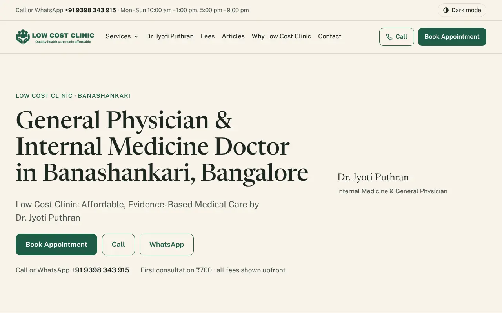
![The whole Diabetes page from top to bottom: summary with the doctor's qualifications and Book, Call and WhatsApp buttons; When to see a doctor checklist; complications screened and linked conditions checked; How diabetes care works here in five steps; How the clinic helps; the fees box with first visit ₹1,000 and follow-up ₹700; questions patients ask; written by Dr. Jyoti Puthran, medically reviewed on 13 Oct 2026; Visit the clinic card with address, hours and an Open in Google Maps button; the medical disclaimer with emergency numbers; and the footer](assets/low-cost-clinic/site-service-full.webp)
Every service page, the same nine parts
A patient who has read one service page knows where everything is on the next.
- A plain summary with the doctor’s name and qualifications, and Book, Call and WhatsApp buttons
- “When to see a doctor”, as a checklist
- How the clinic helps: consultation, tests only when needed, follow-up, teleconsultation, home visit
- The fees box, read from the database
- Questions and answers that open on a tap, with no script needed
- Who wrote the page and who medically reviewed it, and when
- A location card with hours and the map
- A short medical disclaimer
- The emergency numbers 108 and 112
Mental health and de-addiction pages use the same layout. The WhatsApp message they prepare says only “Consultation with Dr. Jyoti Puthran”.
Fees first, the clinic one tap away
Doctors are expected to announce their fees (IMC 2002), so every fee is on the Fees page and in each service page’s fees box before anyone books. Fees are paid at the clinic; there is no online payment.
- The phone number is shown as text and as a tap-to-call button.
- WhatsApp opens a chat with a ready message in the page’s language.
- The map is a picture with Tap to load map. Google Maps loads only when asked, so nothing from Google runs on a plain visit.
- On phones a bar at the bottom keeps Call, WhatsApp and Book in reach, and the header stays at the top.
- The footer carries the address, hours, the doctor’s registration number and council, every service, the legal pages and the emergency line.
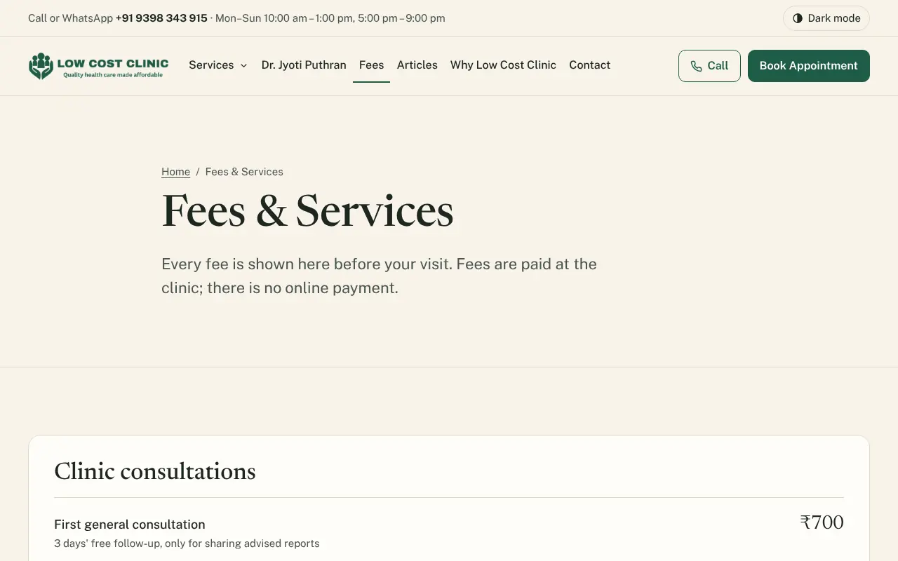
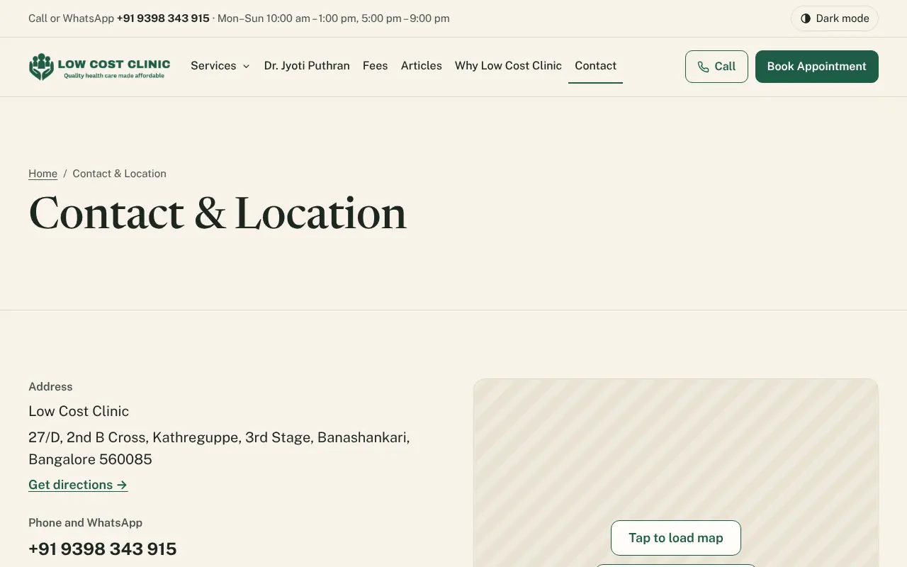
Booking in five steps, about two minutes
One question per step with a progress bar, built to work on a basic Android phone.
- Only free times are offered, grouped into morning and evening. Closed and leave days are greyed out with the reason.
- If someone else takes the time while the patient types, they pick another and their details stay.
- Double taps and retries never make two bookings.
- The clinic confirms every request. One left unconfirmed expires by itself and frees the time.
- “For emergencies, call 108 or go to the nearest hospital. Do not book online.”
- Mental health, de-addiction and teleconsultation visits are bookable online only while their switch is on.
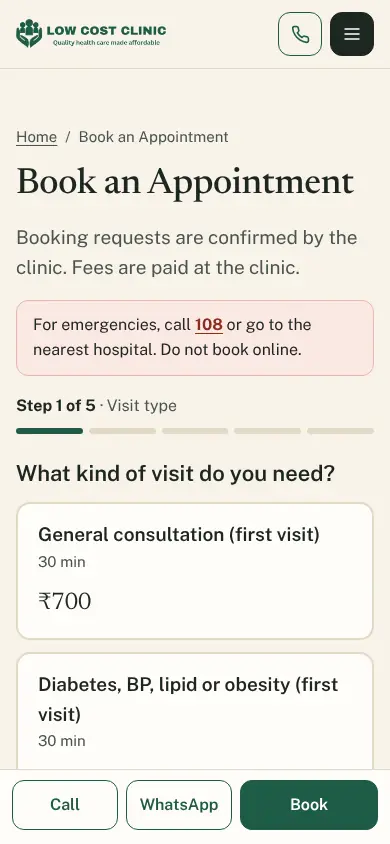
A private page for every booking
Right after booking, and from every message, the patient reaches a page of their own. There is no account and no password.
- It opens after the last 4 digits of the mobile number used. Five wrong tries lock it for an hour.
- It shows the reference (such as
LCC-4K7Q), status, visit type, date, time, fee, address and map, a masked mobile number, what to bring and the booking’s history. - Add to calendar, fix a name or an email, change the contact preference or language, reschedule, cancel, turn reminders off, print or save as PDF.
- After the clinic’s cutoff the buttons give way to “Please call the clinic to make changes”.
- The link stops working 30 days after the visit. The page is titled only “Your booking”, and is never indexed or cached.
Home visits and questions
For patients who cannot travel: name, mobile, locality (from the clinic’s served areas), PIN code, preferred date, a time window (morning, afternoon or evening), visit type, an optional short note and the consent box.
The fee shows before sending: the area’s fee, or “confirmed on the call”. An unlisted area reads “We may not be able to visit this area. Please call us.” The patient gets a private page, as for a booking.
The full street address is never collected on the website. Staff take it on the confirmation call.
Name, mobile, topic, message, how to reply, whether a message may be left, and consent, with the line “Please do not share medical details here.”
Every public form has invisible spam protection (Cloudflare Turnstile), a hidden trap field and a limit of 5 sends an hour per visitor.
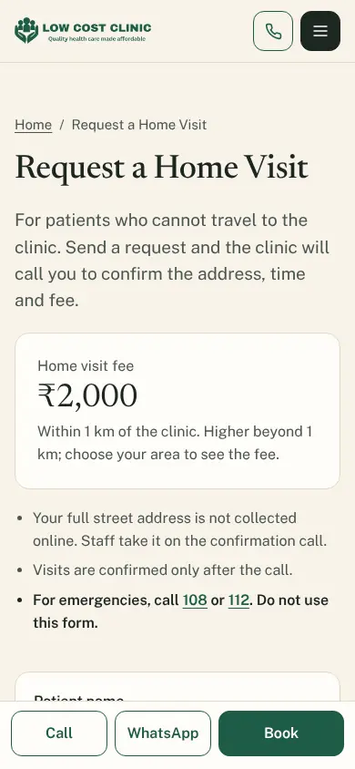
Feedback stays inside; notices go on top
Once a visit is marked completed the patient gets a feedback link: on WhatsApp from the clinic, or by email the next morning. A 1–5 star rating; four Yes / Somewhat / No questions (felt heard; diagnosis and treatment explained; waiting time acceptable; fees clear beforehand); an optional comment; an option to stay anonymous and a “You may contact me” tick. One response per visit; the link works for 14 days.
Feedback is never published. Testimonials count as self-promotion under IMC 2002, so the site has none.
A slim notice above every page (Holiday, Doctor on leave, Changed hours or General notice) in the visitor’s language, between its start and end times. The visitor can close it, and it never covers the Call or WhatsApp buttons.
Reading, downloads and search
A list with search, category, sort and pages, showing reading time and the “Medically reviewed on” date. Each article has headings, lists, highlighted boxes, images, references, an author box, a related service and a Book button.
Free PDFs (diet guides, log sheets, exercise sheets) by category, the visitor’s language first. No login, email or form before downloading. Downloads are counted per day and language, with nothing about the visitor stored.
Unique titles and descriptions, one address per page, a sitemap, and structured data that names the clinic, the doctor and each qualification. English is the indexed version; private pages, downloads and filtered lists are kept out.
- MedicalClinic
- Physician
- MedicalWebPage
- Article
- FAQPage
- BreadcrumbList
For the clinic team
The admin is where reception confirms bookings and sends messages, the editor keeps the pages right, translators work in their languages, and the owner approves what needs approving. It works on a computer, a tablet or a phone, in light or dark.
One sign-in, four roles
Staff sign in through Cloudflare Access with a one-time code sent to an allowed email address, or with Google. The site stores no passwords.
- Owner: everything, including feedback comments and message text.
- Reception: bookings, home visits, enquiries and messages.
- Editor: website content; no patient data.
- Translator: assigned languages only; no patient data.
One table in the code lists every screen and the roles that may open it. The menu, the tabs, the route checks and even the user guide read that same table, so nobody is shown a screen they cannot open.
| Screens | Owner | Reception | Editor | Translator |
|---|---|---|---|---|
| Dashboard, user guide | ✓ | ✓ | ✓ | ✓ |
| Appointments (Day, Week) | ✓ | ✓ | — | — |
| Home-visit requests, enquiries | ✓ | ✓ | — | — |
| Feedback, service areas | ✓ | — | — | — |
| Message generator, log, daily messages | ✓ | ✓ | — | — |
| Pages, interface text, articles, resources, templates | ✓ | — | ✓ | ✓ |
| Media library, menus, clinic details, fees | ✓ | — | ✓ | — |
| Hours & closures, banners | ✓ | ✓ | ✓ | — |
| Booking rules | ✓ | ✓ | — | — |
| Publish and its history | ✓ | — | ✓ | — |
| Feature switches, users, audit log | ✓ | — | — | — |
Reception sees the message log without message text. Editors’ fee changes wait for the owner. Translators can’t publish or mark a page reviewed.
The day, at the top of the dashboard
- Today cards: today’s visits, requests waiting for confirmation (and how long the oldest has waited), home visits, new enquiries, reminders not sent, the active banner.
- Charts with date ranges and filters: bookings per day, visit types, confirmation, completion, cancellation and no-show rates, time to confirm, online versus reception, languages, feedback, home visits, enquiries and downloads. Each has a table view.
- System card (owner): last publish, last backup and today’s free-plan usage, so a limit is seen before it is reached.
- Totals CSV (owner): counts only, never a patient row.
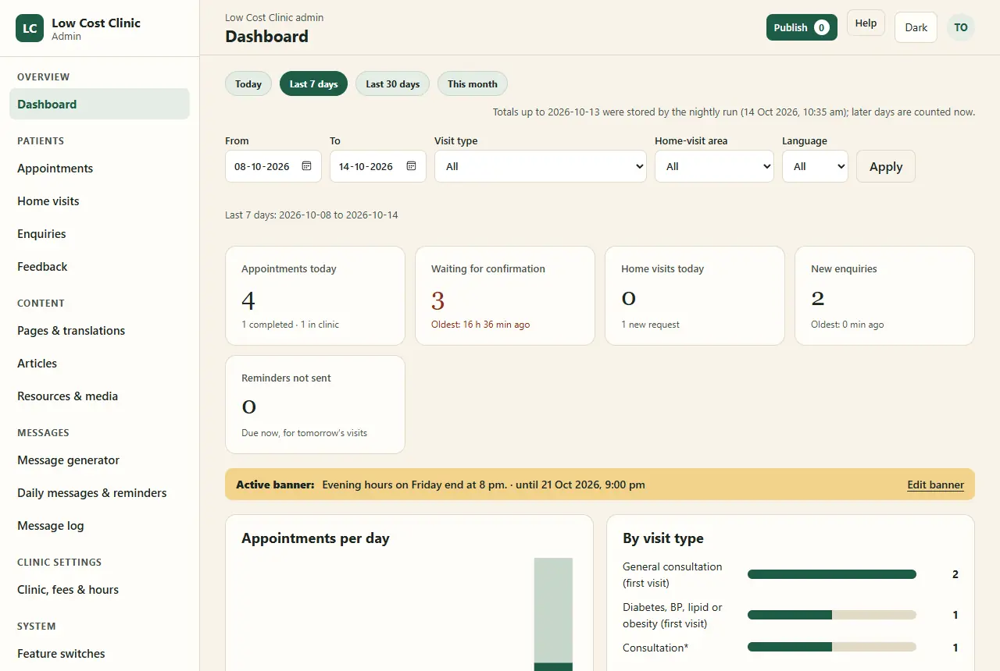
Reception runs the day from one list
Day and Week views, with a badge for requests waiting for confirmation. Each row carries only the buttons that make sense for its status.
- Confirm
- Decline, with a reason
- Reschedule
- Cancel
- Arrived
- Mark completed
- No-show
- New booking for phone and desk bookings: confirmed at once, up to 60 days ahead.
- Block time: a range, a session or a whole day. It disappears from online booking at once.
- Mobile numbers are masked in lists. Searches by name or last 4 digits are posted, so they never appear in the address bar.

A booking’s life, in seven words
The same status colours appear everywhere in the admin: Requested Confirmed Completed Declined Cancelled No-show Expired. A move that isn’t allowed from the current status is refused, and arrival, completion and no-show belong to the visit day.
Every booking carries its messages and its history
- A message panel on each booking: confirmation, new time, decline, cancellation, feedback request. The approved template is filled in the patient’s language, ready to edit.
- Send on WhatsApp copies the text first, then opens the clinic’s WhatsApp with it, so it can be pasted if WhatsApp opens empty. Copy and Send by email sit beside it.
- Wording stays neutral: no visit type and no health details in any message.
- A timeline of everything that happened: key dates across the top, then each status change, edit, message, page access and note, with filters and print.
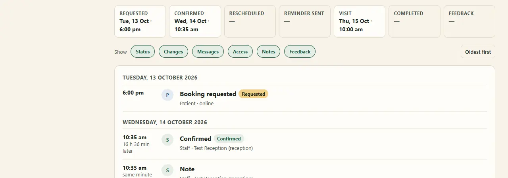
![Booking LCC-RZWR just confirmed, with made-up patient Lakshmi Test: visit type, date and time Thursday 15 October 2026 10:00 to 10:30 am, a masked mobile number with a Call link, contact by WhatsApp, language Hindi; Reschedule, Cancel, Message patient and Other messages buttons; and the Confirmation message panel with Confirmation and New time tabs, language tabs with Hindi marked as the patient's, the filled message with the clinic address, map link and booking link, a note on neutral wording, and Send on WhatsApp and Copy buttons](assets/low-cost-clinic/booking-confirmed.webp)
Home visits share the clinic’s calendar
- A requests list and a page for each request: schedule, move, cancel and complete.
- A scheduled visit blocks the same time in the clinic calendar, so online booking can’t offer it.
- Ready messages: visit scheduled, please share the full address, the doctor is on the way, cancellation, feedback request.
- Service areas (owner): names in each language, PIN codes, a fee per area, order and on or off.
The street address is taken on the confirmation call and is not stored online.
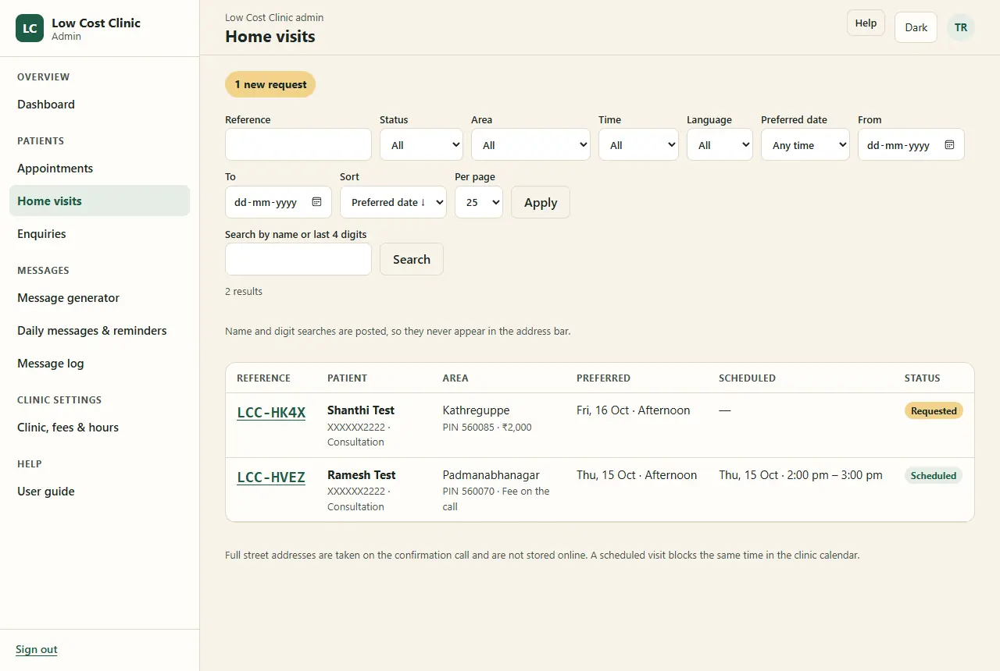
Two inboxes that stay closed until opened
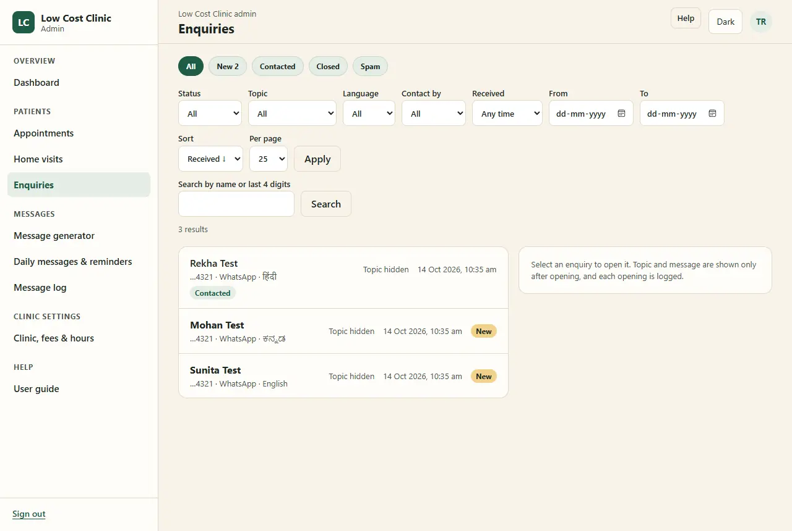
Topic and message stay hidden until an enquiry is opened, and each opening is logged. Call, reply with a template, mark contacted, close or mark as spam. When a patient withdraws consent, the enquiry is deleted that night.

Ratings and answers, the comment after opening, Reviewed or Needs follow-up, and a call-back only when the patient allowed it. Comments are deleted after 12 months.
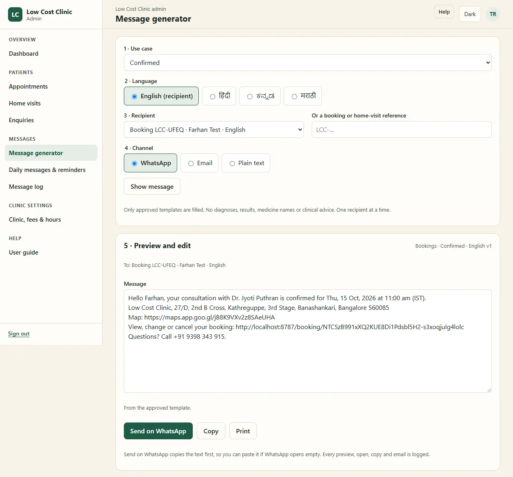
Any message, from an approved template
Choose a use case, a language (the recipient’s by default), a recipient and a channel. The approved template is filled with the booking’s details; anything missing is listed. Edit, then Send on WhatsApp, Copy, Send email or Print.
Bookings, teleconsultation, home visits, follow-up, feedback, enquiries, clinic notices, fees, information and staff. Each has a text per language, variables, drafts and approval. Approved versions are kept, so the log can always show what was sent. Clinical topics need the owner’s approval.
No AI writes these messages. Staff fill approved wording, and nothing leaves without a person pressing Send.
Every message logged; tomorrow’s reminders in one tap each
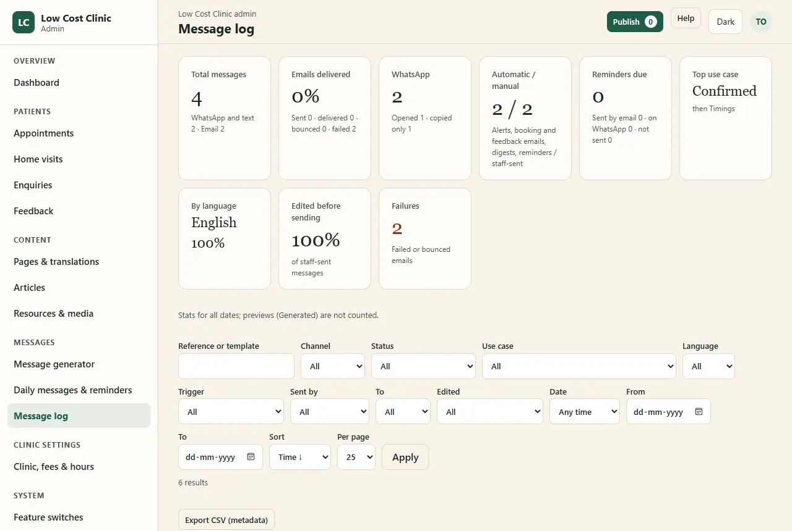
Every WhatsApp opened or copied and every email, with stats, filters, delivery status from the email provider, “Send again” for a failed email, and a metadata-only CSV. Message text is the owner’s only.
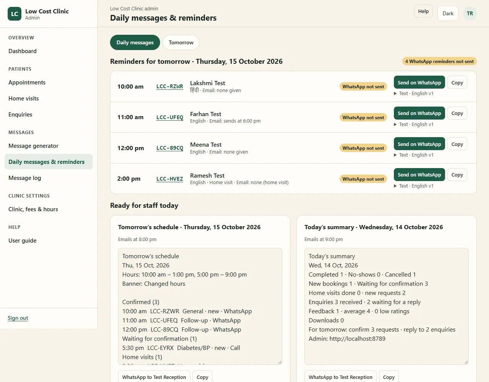
Tomorrow’s WhatsApp reminders in one tap each; email reminders go by themselves at 6 pm. The staff schedule (8 pm) and summary (9 pm) carry references and counts, never names. A Tomorrow list prints for the desk.
Every word on the site is edited here
- Pages & translations: each page’s title, heading, search text, summary, sections and questions, with character counters, a draft preview, a medical review and “Sensitive” marks.
- Interface text: buttons, menus, form texts, fee names, qualifications and categories in each language.
- Articles: a block editor (headings, paragraphs, lists, callouts, images), references, a cover image, a related page and review.
- Translators see their own languages, with the English beside each field. A page without a reviewed translation stays English on the site, with a short note.
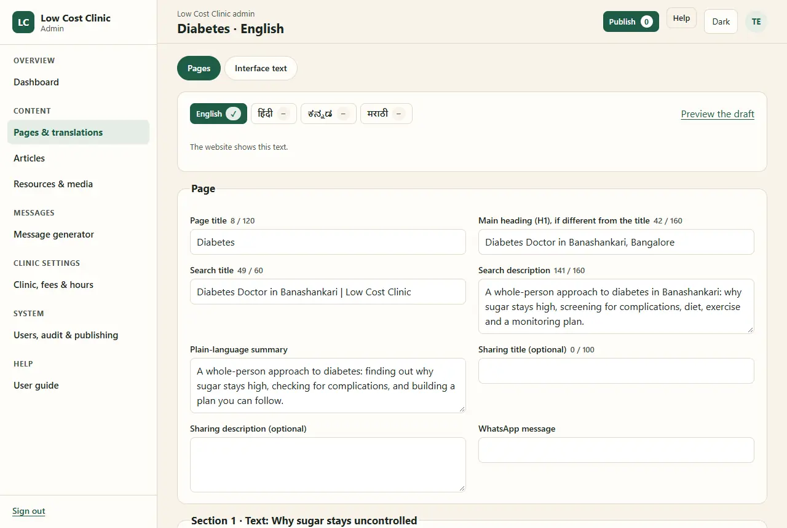
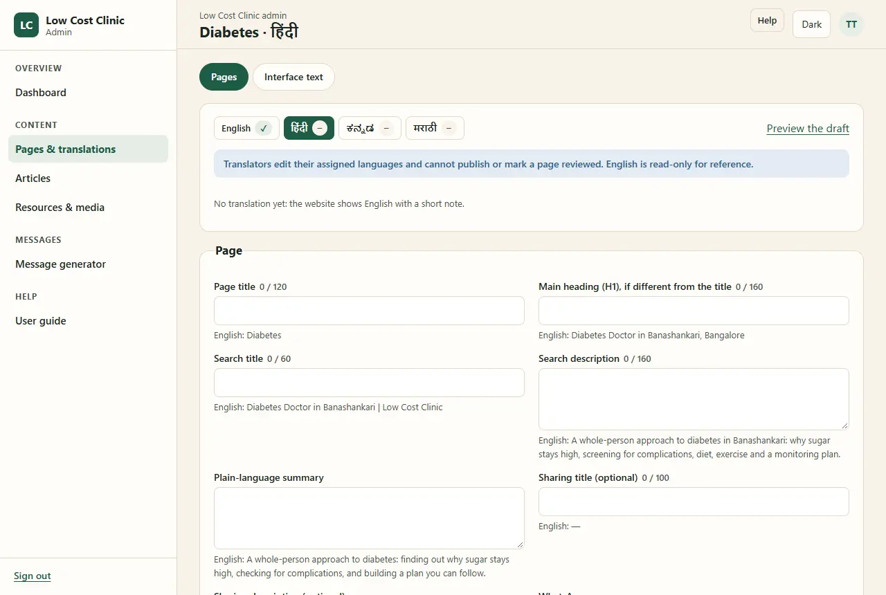
One button sends every ready change
Edits are saved as drafts. Publish sends every change that is ready to the website, which is rebuilt in 1–3 minutes while staff keep working.
- A change that needs the owner (a fee edited by an editor, clinic settings) or a medical review (a page or an article) waits, and says why.
- Publish history shows each build and who asked for it.
- The public pages are plain files, so they stay up even if the database is down.
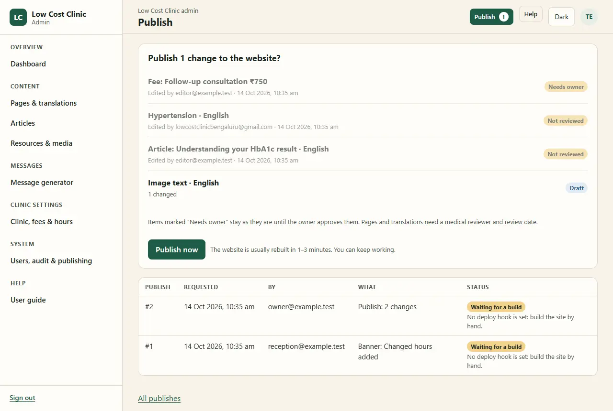
The clinic’s facts, in six tabs
- Clinic details: name, address, map link, phone, WhatsApp, email, social links, headline and tagline; the doctor’s registration number, council and photograph (owner).
- Fees: an editor’s change waits for the owner’s approval.
- Hours & closures: the weekly hours and closed days.
- Booking rules: how far ahead, minimum notice, when unconfirmed requests expire, the change and cancel cutoff, how many online reschedules, visit lengths and the weekly booking schedule.
- Banners: previewed in all four languages, with the option to close online booking for those dates.
- Menus: header and footer order; the legal links, the emergency line and Book stay locked in.
Online booking answers “unavailable” until the booking rules are filled in. Nothing is guessed.
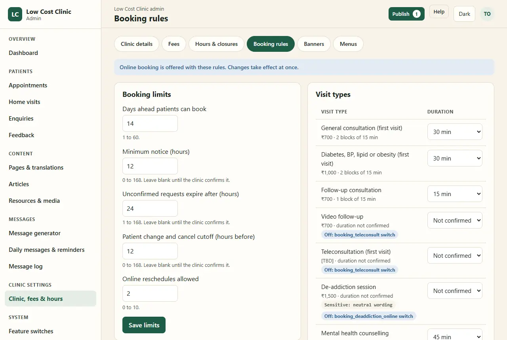
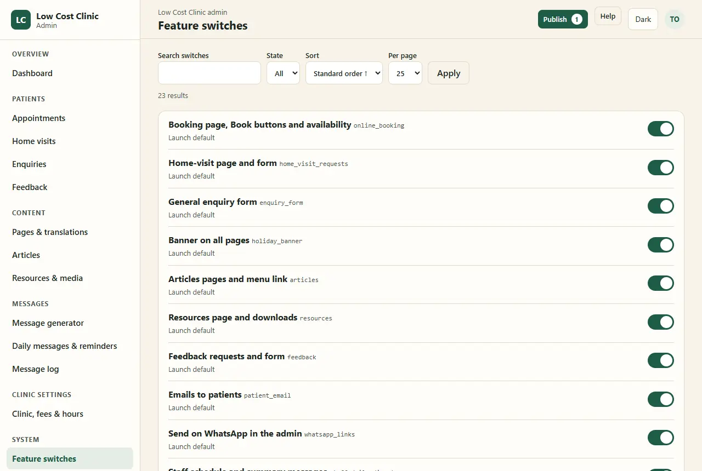
Twenty-three switches, each one instant
The owner can stop any feature, or show a language, at once: online booking, home visits, the enquiry form, banners, articles, resources, feedback, patient emails, WhatsApp buttons, staff digests, reminders, the generator, Hindi, Kannada, Marathi, analytics, teleconsultation and the sensitive visit types.
- Dependent switches turn off together: teleconsultation booking needs online booking.
- A switched-off endpoint answers “unavailable” with the clinic’s phone number. Existing bookings keep working.
- Users & roles and the audit log live beside the switches. At least one active owner is always kept.
Photos and PDFs shrink before they upload
- Photos are resized to 2,000 px and turned into WebP in the browser, which also drops the location data a phone camera writes into a picture. Alt text in each language.
- PDFs are compressed in the browser by Ghostscript (as WebAssembly, loaded only when a PDF is chosen), with their author and title data removed. A PDF per language, order and show or hide.
- The server trusts nothing it is sent: it checks the file really is WebP or a PDF, its size and dimensions, refuses PDFs with scripts, and spots duplicates.
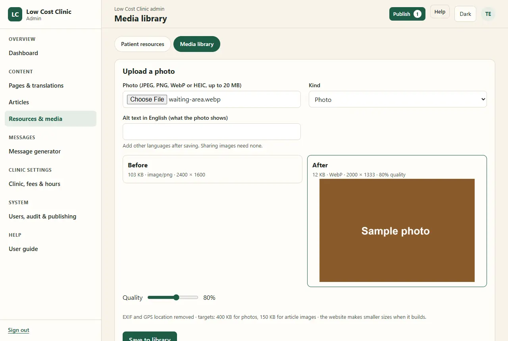
The staff guide lives inside the admin
- Help → User guide in the menu, and a Help button on every screen that opens the right section.
- Step-by-step for every action, starting with reception’s daily routine and the patient privacy rules for everyone.
- Each role sees the parts for its own screens.
- Screenshots of every screen, made from made-up patients by a script that drives the real admin; they are remade whenever a screen changes.
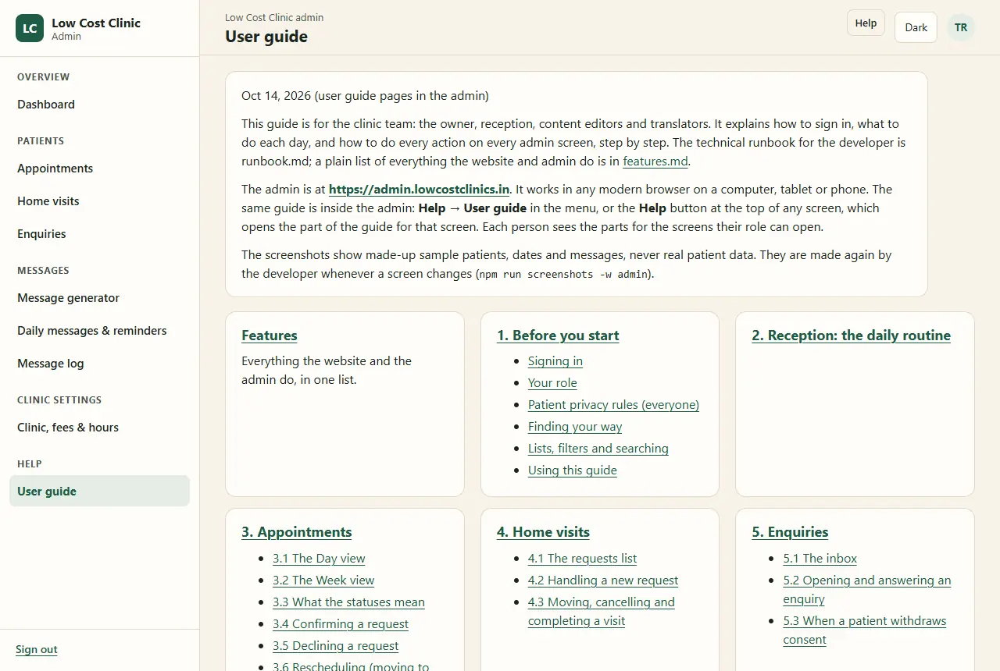
What runs by itself, through one day (IST)
Hatched hours are night. The free plan has five scheduled triggers per account and the site and its preview already use four, so there are just two: every 15 minutes and nightly. The 15-minute job checks the India time itself and runs each daily task once; a record of each run stops duplicates.
Patient data stays private
A clinic holds some of the most sensitive data there is. The rule here is to collect little, lock what is kept, log every look, and delete it on time. Everything in this part is checked by automated tests or by the security review.
Ask only for what the visit needs
Each form has a fixed list of fields and refuses anything else it is sent, so a field cannot be added by accident, or by someone tampering with the page.
Name, mobile, an optional email, preferred language, whether WhatsApp is OK, consent.
Name, mobile, locality, PIN code, preferred date and time window, visit type, an optional short note, consent.
Name, mobile, topic, message, how to reply, whether a message may be left, consent.
A rating, four short answers, an optional comment, stay anonymous or not, may the clinic call back.
- Date of birth
- Street address (taken on the phone for home visits)
- ID numbers
- Medical history or reports
- File uploads of any kind
- Passwords or accounts
Consent: the box is never ticked in advance. The version of the privacy notice, its language and the time are saved with each request.
Encrypted, field by field
- Names, phone numbers, emails, notes, comments and message text are encrypted (AES-GCM) before they are saved. The key lives only in Cloudflare’s secret store, never in the code or the database.
- Each value is sealed together with its place (table, column and row). Copied anywhere else it will not open, and the admin shows “[cannot be decrypted]” rather than the wrong person’s name.
- The database itself refuses plain text in those columns: a forgotten encryption fails loudly instead of storing a readable name.
- IP addresses and email addresses used for matching are kept only as salted hashes: enough to count, not to read.
- Weekly backups are encrypted before they are written.
Who sees what
Patient data is for the owner and reception only. Editors and translators never see a patient, and the most sensitive text (feedback comments and message text) is the owner’s alone.
- Lists mask mobile numbers. Mental health and de-addiction visits read “Consultation” in every list.
- Enquiry topics and feedback comments stay hidden until a record is opened.
- Opening a patient record is written to the audit log before the data is shown.
- No bulk export of patient data exists: the only downloads are counts and message metadata.
| What | Owner | Reception | Editor | Translator |
|---|---|---|---|---|
| Bookings and home visits | ✓ | ✓ | — | — |
| Enquiries, after opening | ✓ | ✓ | — | — |
| Feedback ratings and comments | ✓ | — | — | — |
| Message log: who, when, which template | ✓ | ✓ | — | — |
| Message log: the text itself | ✓ | — | — | — |
| Audit log | ✓ | — | — | — |
| Website content | ✓ | — | ✓ | own languages |
| Dashboard counts | ✓ | ✓ | content only | content only |
Every change and every look, written down
- Every sign-in, change, opening of a patient record, export and publish writes an audit row: who, when, what, which record, and what changed.
- The audit row is saved in the same database batch as the change, so a change is never saved without its record.
- The log is append-only, kept for a year, and only the owner can read it.
- Each booking and home visit also keeps its own timeline of events, with old and new values encrypted.
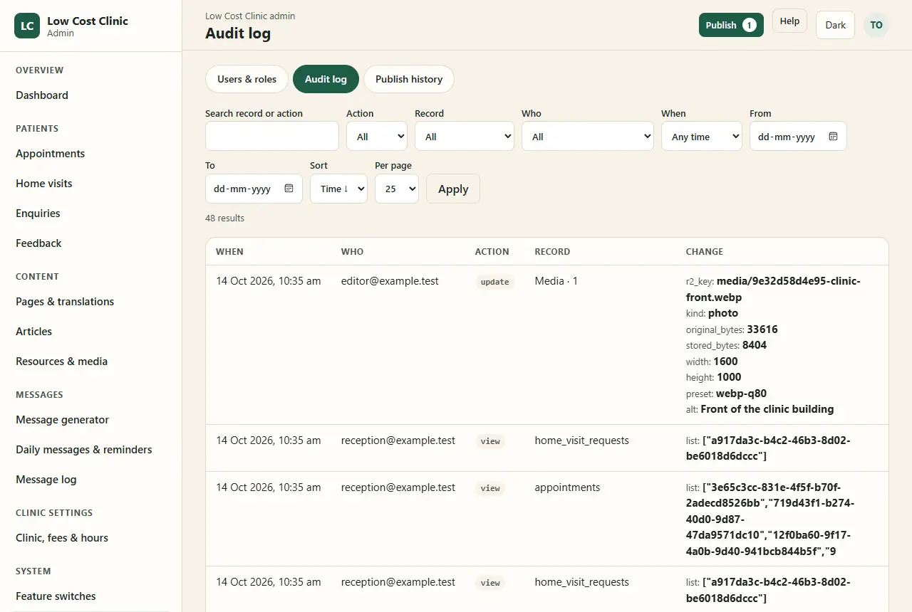
Nothing in the address bar, the logs or the browser
- Web addresses carry a random code at most: never a name, a phone number or a condition. Admin searches are posted, so they never land in the address bar or history.
- Page titles stay generic. The booking page is “Your booking”.
- The browser keeps two things: the language and light or dark. The booking form holds details in memory only.
- Server logs hold no request bodies, no decrypted fields and no tokens. Request logging on Cloudflare is switched off, and errors never repeat what was typed.
- Analytics are cookieless and never run on booking pages; no outside script can read a form.
- The public site is built from published content only. A test proves the build cannot read a patient table.
Sensitive visits, neutral words
Mental health and de-addiction care need more than encryption: a calendar reminder on a shared phone, or a message on a lock screen, can say too much.
- “Consultation with Dr. Jyoti Puthran” is the only wording in messages, calendar files, web addresses, done screens and analytics.
- The WhatsApp message these pages prepare is neutral too.
- Admin lists say “Consultation”; the visit type shows only inside the record.
- Patients are asked whether a message may be left and whether WhatsApp is OK, and the answer is honoured: no WhatsApp button without it.
Checked in the browser in Hindi and Marathi during the security review: the done screen, booking page and calendar file all read “Consultation with Dr. Jyoti Puthran”.
A lock on every door
- Cloudflare Turnstile, the invisible spam check
- A hidden trap field that only bots fill
- 5 sends an hour per visitor, counted by a salted hash of the address, never the address
- A 16 KB size cap and a fixed list of fields
- An idempotency key, so retries never double-book
- A long random code in the link; only its hash is stored
- The last 4 digits of the mobile, 5 tries, then locked for an hour
- A 30-minute session in a cookie scripts cannot read, sent only to this site
- Never cached, never indexed, no referrer sent onwards
- Cloudflare Access in front; the Worker checks the Access token again (signature, audience, issuer, expiry)
- The email must belong to an active staff user
- A role check on every route
- Forms accepted only from the admin itself
- A strict content policy, no framing, never cached or indexed
HTTPS only, with HSTS. Secrets live only in Cloudflare’s secret store; the encryption key is shared by the two Workers and nothing else.
Kept for a year, backed up weekly, ready for the worst
Patient records, feedback comments and message text are deleted 12 months after the visit or enquiry; old sessions, rate limits and audit entries go too. When a patient withdraws consent, their enquiry is deleted that night.
The whole database is encrypted into private storage and kept 12 weeks. A weekly job copies the newest encrypted file outside Cloudflare. Restoring is written down and was tested.
A written runbook: tell affected people without delay and report to the Data Protection Board within 72 hours. Data requests are answered within 90 days, aiming for 7.
Built to the medical ethics rules and the data law
The site follows the IMC 2002 ethics regulations (the NMC 2023 conduct rules are on hold) and the DPDP Act 2023 with the DPDP Rules 2025, whose notice, security and breach duties start on 13 May 2027. It is built to them from day one.
| Medical ethics (IMC 2002) | What the site does |
|---|---|
| Registration number | On the doctor page and the footer, with the council |
| Announce fees | The full fee table, and a fees box on each service page |
| No self-promotion | Factual tone; “best”, “top”, awards and badges are banned, and tests scan every page for them |
| No testimonials | Feedback stays internal |
| No cure claims | “Manage” or “control”, never “cure” |
| Photograph, statistics | The doctor’s photo only with the doctor’s agreement, behind a switch; a diabetes statistic hidden until verified |
| Data protection (DPDP) | Status |
|---|---|
| Minimal forms, unticked consent, notice version stored | Met |
| Encryption; every staff view logged | Met |
| Deleted after 12 months | Met |
| Contact for data questions; breach runbook; 90-day requests | Met |
| Privacy notice in all four languages | English done others before their language goes on |
| Data-processing terms with Cloudflare and the email provider | Owner before launch |
From the requirements: “This is research, not legal advice; confirm with the Karnataka Medical Council or a healthcare lawyer.”
Every test passed. The review still found five things.
The last build phase read every code path against the privacy rules, ran the release check against a local copy, and tested all four languages in a browser. Five findings, all fixed the same day:
| # | What was wrong | What it would have done | The fix |
|---|---|---|---|
| F1 | The admin’s site address pointed at the admin itself | Every booking link in staff messages would have sent patients to the staff sign-in page | Corrected, and a test now compares the two Workers’ settings |
| F2 | Cloudflare could keep a log of every request | Booking codes, visitor addresses and the staff sign-in token would sit in logs | Request logs switched off in both Workers; covered by the config test |
| F3 | The admin logged raw error messages | Some errors quote what was typed, such as a name | Quoted parts are dropped; a test checks a name never reaches the log |
| F4 | Staff alerts were set to send from a Gmail address | Every staff alert and daily summary would have failed to send | Sent from the clinic’s own domain |
| F5 | The privacy notice said “write to [TBD]” | No published contact for data questions | The confirmed clinic email is in the notice |
F1 and F4 passed every test because tests set their own settings. The lesson went into the log: check the deploy configuration itself, not just the code.
Everyone can use it
Many of the clinic’s patients are older, read best in their own language and use a basic Android phone on a patchy connection. The site was built for them first: large text, big buttons, four languages, and pages that load fast.
Large, clear and calm
Built to WCAG 2.2 AA, then checked page by page.
Designed in
- 18 px body text; contrast of 4.5:1 or more, checked for every status colour in both themes
- Tap targets of at least 44 px; a thick amber focus ring
- Every field labelled; icons always with words
- Plain language; one question per booking step; the number keypad for phone numbers
- Menus and questions open without JavaScript
- Light and dark, following the phone or the visitor’s choice
Checked
- Lighthouse accessibility 100 on the English pages and on 12 admin screens
- W3C validator: 0 errors on the 21 pages, the booking page and 30 admin screens
- Every page at 360 px in all four languages: no sideways scrolling
- A booking made start to finish on a phone in Marathi, a change and a cancel in Hindi
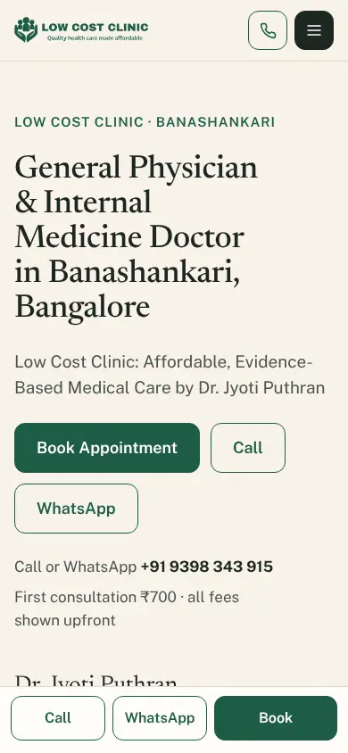
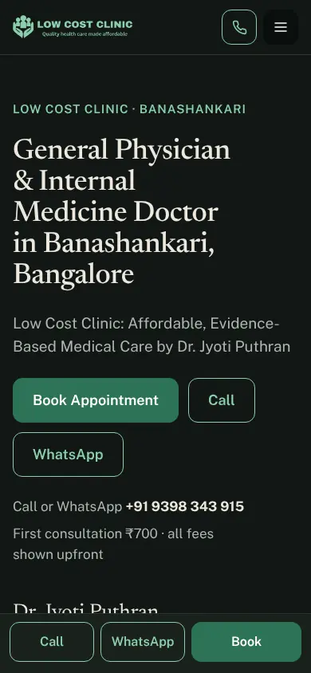
Four languages, one address per page
- Switched in the header or footer; remembered on the device and kept in shared links (
?lang=hi). - A language appears in the switcher only when the owner turns it on, once its translations are reviewed.
- A page without a reviewed translation stays in English, with a short note in the chosen language.
- Indian-language fonts are served by the site itself and loaded only when that language is chosen. A translated page waits for its text and font before it shows, so nothing jumps.
- Booking pages, forms, messages, dates and calendar files come out in the patient’s language too.
Every English text was copied into each language with a marker in front, switched on, and built. A browser then opened 20 pages in all four languages at 360 px and flagged any visible text without its marker.
- हिं·Book an Appointment
- ಕನ·Book an Appointment
- मरा·Book an Appointment
Any text that stayed plain English was a string the switcher had missed. The marked copies were deleted afterwards.
Fast on a mid-range phone, over 4G
The targets: the main content in under 2.5 seconds, a reply to a tap in under 200 ms, and a layout that doesn’t jump (shift under 0.1).
- Content pages are plain HTML with no framework, only small scripts for languages, booking and forms. The hero image is 100 KB or less.
- Lighthouse on its phone profile (slow 4G, a 4× slower processor): English pages score 97–100 for performance.
- The quality pass found three slow spots and fixed them: the booking page’s footer jumped as the steps appeared; translated pages jumped as text and fonts arrived; and the home page preloaded italic fonts it never used.
Layout shift, before and after the fixes
Lighthouse phone profile; lower is better
Home page, time to main content
Seconds, Lighthouse phone profile; lower is better
Show the numbers as a table
| Measure | Before | After | Target |
|---|---|---|---|
| Layout shift, booking page | 0.475 | 0 | under 0.1 |
| Layout shift, translated pages | 0.6–0.9 | 0 | under 0.1 |
| Home page, main content | 3.4 s | 2.0–2.4 s | under 2.5 s |
Under the hood
For developers: how a static Astro site, two Cloudflare Workers, one SQLite database and two storage buckets do all of the above for Rs 0 a month, and how the rules that protect patients are enforced in code and tested.
Two Workers, one database
- Public pages are static HTML built by Astro from published content. A database outage cannot take them down.
- The site Worker serves those files and handles only the moving parts: booking and form endpoints, private booking pages, downloads, list views, the email webhook and the scheduled jobs.
- The admin Worker runs on its own address behind Cloudflare Access and shares the database and file bucket with the site.
- Publishing marks drafts as published in one database batch, then calls a deploy hook; Workers Builds rebuilds and deploys the pages in 1–3 minutes.
npm workspaces, Node 24, TypeScript throughout: site/, admin/ and shared/ (crypto, booking, messages, backups, the content readers).
Rs 0 a month, without pausing
The brief allowed free plans only, for commercial use, on a service that never sleeps between visits. That ruled out most of the usual choices.
| Layer | Choice | Free limit (Oct 2026) |
|---|---|---|
| Site | Astro, static output | open source |
| Hosting | Workers + static assets | static free; 100k Worker requests a day |
| Publishing | Workers Builds, deploy hook | 3,000 build minutes a month |
| Database | D1 (SQLite) | 5M rows read, 100k written a day |
| Files | R2 | 10 GB, free egress |
| Admin sign-in | Cloudflare Access | 50 users |
| Spam | Turnstile + trap field + limits | free |
| Patient email | Resend | 3,000 a month, 100 a day |
| Considered | Why not |
|---|---|
| Next.js on Vercel Hobby + Supabase | Hobby is non-commercial; Supabase Free pauses after 7 quiet days |
| Netlify Free + Supabase | A monthly credit cap; the site pauses when credits run out |
| Payload CMS on Cloudflare | The best paid upgrade (about $5 a month) |
| Directus, Strapi | Need an always-on server with no reliable free host |
| Git-based CMS | Values would live in git, not a database |
The trade-offs: a custom admin to maintain; one vendor for hosting, data, login and email (weekly off-platform backups cover data loss, not downtime); past the daily database limits, booking and the admin stop until 5:30 am IST while static pages stay up, and the dashboard warns first.
The build cannot see a patient
The public site is built from the same database that holds the patients. So the build never reads that database directly.
- Before every build, an allow-list of content tables is copied into an empty, migrated database in memory.
- Every reader the pages use runs against that sandbox, which has no patient rows to give.
- The build writes the pages, the translation files, the sitemap and structured data, and a content security policy with a hash for every script.
Two tests guard it: the sandbox contains no patient table, and a second test puts patient rows in the source database and checks the built site still has none of them.
Two bookings never share a quarter-hour
- The day is cut into 15-minute blocks. A booking locks every block it needs; the lock table has a unique index on doctor and block start, and every timestamp must sit on a quarter-hour.
- The booking, its locks and its first event are written in one database batch. If any block is taken the whole batch fails and nothing is saved; the patient is asked to pick another time.
- An idempotency key means a double tap or a retry returns the same booking.
- Database triggers free the blocks the moment a booking is declined, cancelled or expires. Staff blocks and scheduled home visits take time the same way.
The test fires three overlapping bookings at the same instant against a real local database: exactly one wins.
Three kinds of table, and rules in the schema
Fifteen migrations build one SQLite database. Each table belongs to one of three groups, and only the first is ever exported to the build.
- settings
- interface strings
- switches
- menus
- doctor
- qualifications
- pages
- FAQs
- fees
- hours
- closures
- media
- banners
- articles
- resources
- … and their translations
- enquiries
- appointments
- appointment events
- booking access
- booking sessions
- home-visit requests
- feedback requests
- feedback
- admin notes
- reminders
- message log
- admin users
- audit log
- publish jobs
- rate limits
- digest settings
- digest runs
- download counts
- daily stats
Checks
Encrypted columns accept only the sealed format; timestamps must fall on a quarter-hour; dates must be real dates.
Triggers
Free a booking’s blocks on cancel; always keep one owner; keep approved template versions; switch off dependants; keep locked menu items; enforce the translation review rule.
Drafts as rows
Each translation has a draft row and a published row; publish swaps them in one batch, so the site never sees half an edit.
Six checks before any admin screen
Every request to the admin passes the same middleware, in this order. A screen’s own code only runs after all six.
Secure headers
A content policy allowing only the admin itself, no framing, no referrer, never cached, never indexed.
Same-origin forms
A form post must come from the admin, or it is refused.
Access token
Cloudflare Access’s signed token is verified again: signature, audience, issuer, expiry.
Active staff user
The email must match an active staff user. Each sign-in is audited.
Role check
The route checks the role against the one screen table that also draws the menu.
Audit with the change
Any change, view or export writes its audit row in the same batch.
Errors show a generic page, and quoted input is dropped from what is logged.
On a developer’s own machine only, a set email stands in for Access, and only when the request comes from localhost. A deployed Worker never sees localhost.
Tests for the rules that matter
[TBD]A few of the tests
- Three bookings for the same time at once: exactly one wins.
- The public build contains no patient table.
- Each role opens only its own screens (the role matrix).
- Every admin response is no-store, noindex and unframeable.
- Twelve wrong digit guesses at once still lock after five.
- A quoted name never reaches a log line.
- No “best”, “top” or “cure” in the seed copy or the built pages.
- The two Workers’ deploy settings agree with each other.
And by hand, before launch
- The release check against a running copy: headers, robots, canaries, nothing echoed.
- A browser sweep of 20 pages × 4 languages at 360 px.
- Lighthouse on the low-end phone profile.
- A backup restored into an empty database.
- The security and privacy review (slide 41), to repeat before launch and every quarter.
Built with Claude
Three Claude tools, each with its own job: Deep Research for the rules and the platform, Claude Design for every screen, and Claude Code for the build, one phase per session. A person made every decision along the way.
Three tools, three jobs, one set of documents
Each tool handed the next something written down. The three requirement documents sat in the middle: every session began by reading them, and they won every disagreement.
Deep Research
The rules before the code: medical ethics, the data law, free-plan limits, which stacks to avoid.
→ findings in the requirementsThree documents
General Requirements (what), Technical Decisions and Design (how), Database Schema (the tables). About 1,200 lines.
→ the source of truthClaude Design
Every public page and admin screen as clickable prototypes, with tokens, layouts and copy.
→ 42 files indesign/Claude Code
One build phase per session, against the documents and the design: code, migrations, tests and docs.
→ 19 phases, 10–13 OctThe result
The website, the admin, the staff guide, a runbook, a deployment guide and a security review.
→ preview live 13 OctDecides
Wrote the brief, answered design-and-document conflicts, reviewed each phase and deployed.
Answers
Fees, hours, registration, wording and approvals. Until each answer came, the value stayed [TBD].
Researches, drafts, builds
Within written rules: stay in the phase, test what protects patients, write down what went wrong.
The rules, settled before the first line of code
Which medical ethics code applies (IMC 2002, since the NMC 2023 rules are on hold); what the DPDP Act 2023 and Rules 2025 require and from when (13 May 2027); why “cure” is off limits (Drugs and Magic Remedies Act 1954); and what counts as self-promotion: testimonials, “best”, awards, the doctor’s photograph, a success statistic.
Free-plan limits checked in October 2026, the chosen stack weighed against five alternatives (slide 48), and its trade-offs written down.
72 hours to report a breach to the Data Protection Board, 90 days to answer a data request, data-processing terms with every provider.
The research output itself isn’t kept in the repository; this is what the requirement documents record from it, with their own caveat: “This is research, not legal advice.”
Every screen designed before it was built
- A Claude Design project of 42 files: every public page, the booking flow, the private booking page and every admin screen, as clickable prototypes with sample data. One entry file shows them all.
- Imported into the repository on 10 Oct through the design connector, then mapped screen by screen to the phase that builds it.
- A read-only reference: its prototype runtime never ships, and its sample values (phone, domain, hours, registration number, fee bands, names) were never copied. Each became
[TBD]until the clinic confirmed it. - The colours, fonts and spacing in this deck are the design’s own tokens, as the live site uses them.
Newsreader for headings and prices, Public Sans for text, Noto Sans for Devanagari and Kannada.
Where the design and the documents disagreed
| # | The design had | Decided |
|---|---|---|
| D1 | A dark-mode toggle stored in the browser, where only the language was allowed | The owner chose the toggle; the browser keeps only the theme choice beside the language |
| D2 | Fonts loaded from Google | Fonts served by the site; Indian-language fonts only when chosen |
| D3 | Video follow-up bookable online | Behind the teleconsultation switch, off at launch |
| D4 | An optional email in booking | Kept: emails are sent only if one is given |
| D5 | A shorter enquiry form than the schema | The design’s fields only, until the clinic decides |
The documents win over the design. Each conflict had a default, so no phase waited for an answer.
One phase per session, the same loop every time
The build was cut into 19 phases, each sized for one Claude Code session of about five hours. CLAUDE.md set the rules every session followed:
- Read first: the three documents, the plan,
status.md,learnings.mdand the phase’s design files. - Stay in scope: anything extra goes into the notes for later.
- Test the rules that matter: every rule that protects patient data, prevents double booking or enforces a role.
- Finish clean: lint, typecheck, tests and build pass; the status and a learnings entry are written. An unfinished phase is marked In progress and finished first next time.
- The non-negotiables: no patient data in URLs, logs, titles, browser storage, analytics or errors; encrypted patient fields; a public build that reads only published content; neutral wording; no “cure”, “best” or testimonials.
Four days, nineteen phases
The owner decided on 10 Oct to build everything locally and deploy once, at the end. Phase numbers are in green; deployment and owner requests in amber.
10 Oct
Foundations- 0Documents, plan, design import
- 1Foundation and layout
- 2Schema and seed data
- 3–4Public pages, SEO, four languages
- D1Light and dark toggle
11 Oct
Admin and booking- 5Admin foundation, roles, audit
- 6Content and publishing
- 7Enquiries, encryption, retention
- 8Booking engine
- 9Patient booking screens
- 10Admin bookings
12 Oct
Hardening and features- 11Backups, release checks
- 12Home visits
- 13Banners and feedback
- 14Articles
- 15Resources and PDFs
- 16Templates and message log
13 Oct
Finish and review- 17Daily messages, reminders
- 18Reports dashboard
- 19Quality pass, security review, staff guide
- →Clinic answers
- →Preview deployed
14 Oct
Owner requests- →Logo, sticky header, social links
- →ADHD Coaching page
- →User guide inside the admin
- →Features and technical docs
What the learnings log caught
Every session ended with an entry: what went wrong or surprised, the fix, and what the next session should do differently. Every session began by reading all of it. A few of its 180 lessons:
Green tests, broken Worker
Exporting one constant from the Worker’s main file passed every test, then the local Worker refused to start.
Fix: a test checks that file exports only the handlerThe booking page refused itself
With no referrer sent, browsers post forms with Origin: null. Only the browser check found it.
Hindi is heavier
Each Indian-language letter is 9 characters once encoded, so a 500-letter Hindi comment broke the 4 KB form limit.
Fix: a 16 KB limit for forms with free textA check that passed nonsense
A database rule meant to accept only real dates accepted 2026-13-01: a comparison with NULL passes.
Fix: compare with IS, not =The restore that only a restore could test
A unit test passed; the first real restore failed, because rebuilt tables sat in the wrong order.
Fix: restore in foreign-key order, one statement at a timeFonts nobody used
The home page preloaded italic fonts it never shows, which cost a second on a phone.
Fix: upright styles only; 3.4 s became 2.0–2.4 sLogs that remember too much
Cloudflare’s request logs would have kept booking codes and visitor addresses.
Fix: request logs off, and a test reads the configA rule that caught its own disclaimer
The banned-word check failed on “do my best” and “cannot be guaranteed” in supplied copy.
Fix: reword the copy, keep the ruleThe heredoc, again
Shell heredocs mangled or hung edit scripts in five separate sessions, and each time the log said so.
Fix: write the script to a file first. Eventually.What made it work
- Documents first, and they win. Three requirement documents written before any code; every session read them, and the design yielded to them.
- One phase per session. Small enough to finish, test and write down in one sitting; anything extra went into the notes.
- Tests for the rules, not for a number. Double booking, patient data and roles were tested hard; the rest by the release check and a browser.
- A log the next session reads. Most surprises happened once, because the next session knew about them.
[TBD]instead of a guess. No invented phone, fee or registration number; the release check fails until the clinic answers.- Decisions with defaults. Every open question had a default (decisions D1 to D32), so no phase waited.
- Build locally, deploy once. Nineteen phases ran on one machine against a local database; the preview went up once, at the end.
- A review after the tests. The security review found five problems the tests could not see, because tests set their own configuration.
Built, checked, and nearly open
Done All 19 phases built and checked; the preview is live at preview.lowcostclinics.in with its admin.
Before launch
- The domain’s DNS, the admin’s Access application with the staff list, Turnstile and the sending domain for email
- Data-processing terms accepted with Cloudflare and Resend
- The clinic’s last answers, so no
[TBD]is left - Reviewed Hindi, Kannada and Marathi texts, then each language switched on
- The release check against production, an uptime monitor, Search Console
For the clinic team
The staff guide is inside the admin (Help → User guide). The features list, technical details, runbook, deployment guide and security review live with the code.